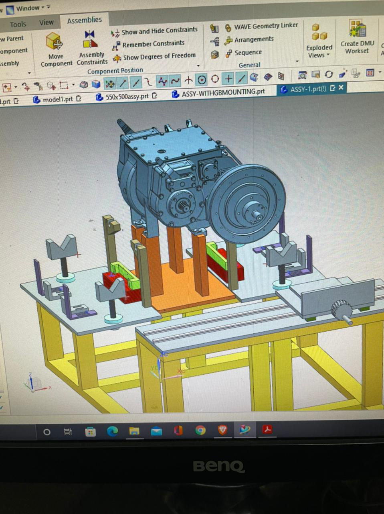
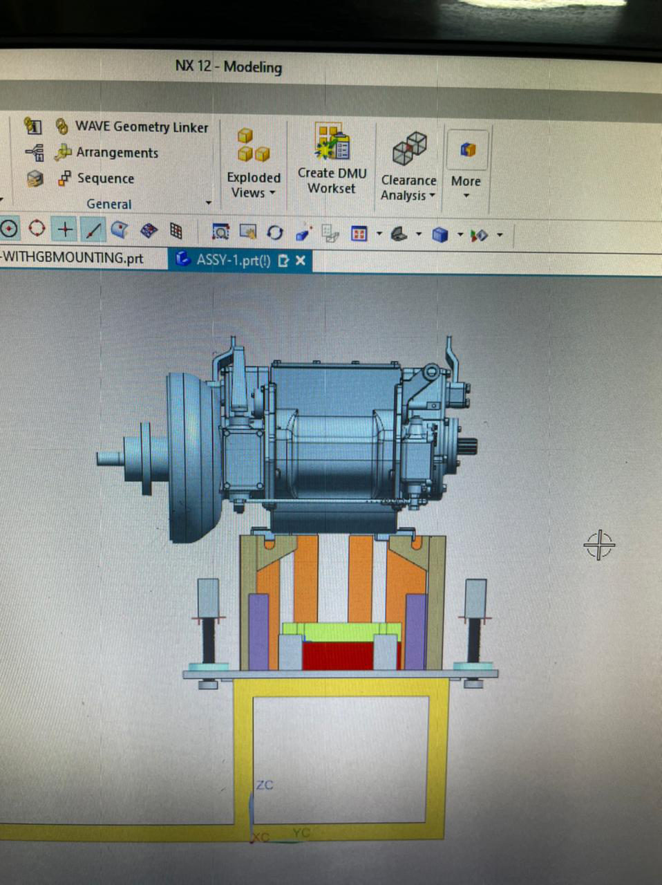
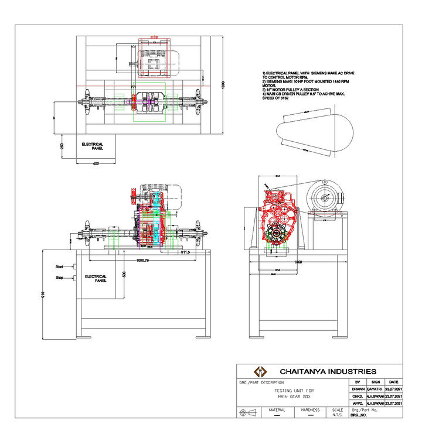
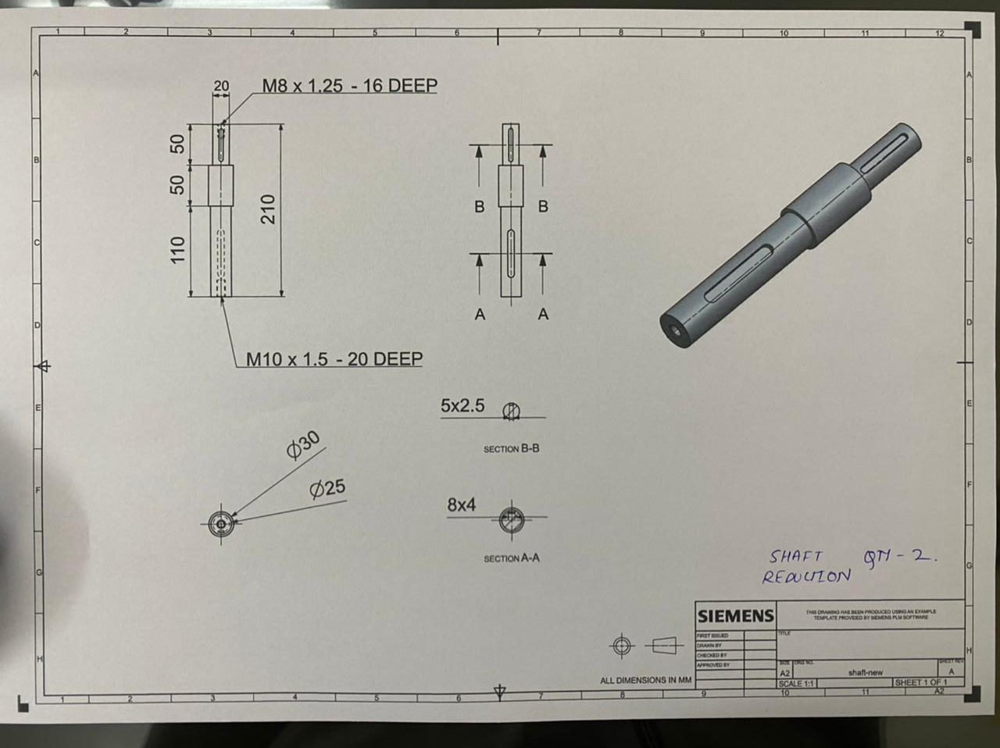
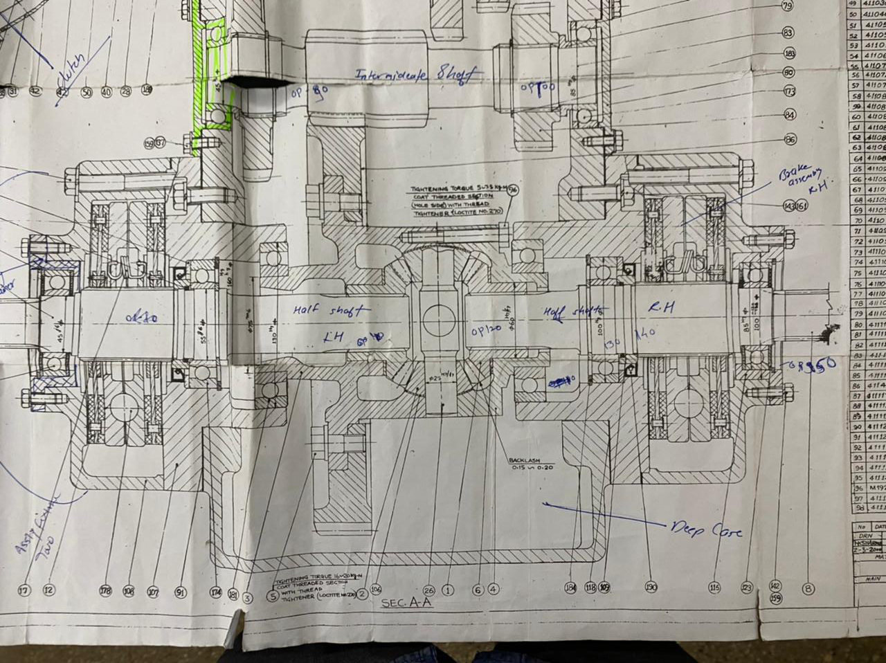

Dynamic gearbox test rig & shaft redesign
An NX CAD test fixture that holds, aligns and loads a harvester gearbox under simulated real-time conditions. It finds failures on the test bench before they reach the field. I also redesigned a reduction shaft and marked up assembly drawings for the shop floor.

The challenge
Gearbox validation for the Paddy Harvester powertrain was slow, and too many defects only showed up after units reached the field, which drove warranty claims. The team needed a rig that could mount the gearbox repeatably, align the input and output shafts to a drive, and run it under loads close to real operation.
Rig architecture
Rigid welded base frame
Box-section weldment carrying separate machined top plates for the gearbox station and the drive and slide station.
Gearbox mounting pedestals
Pedestals that pick up the gearbox's own mounting pads, with locating and clamp blocks so every unit sits in the same place.
Adjustable V-block shaft supports
V-blocks on screw jacks support and align the input and output shafts at the correct centre height for coupling.
T-slot bed with sliding carriage
A rack-and-pinion driven carriage on a T-slot bed lets the drive or load side slide in axially for fast engagement and alignment.
Full assembly in NX
Modeled the complete rig with the gearbox mounted to confirm clearances, access and reach before fabrication.


Reduction shaft & drawing markup
Alongside the rig, I revised a reduction shaft and detailed it in NX. I also hand-marked bearing fits, tightening torques and gear backlash onto the differential assembly section so the shop floor had one clear reference.
| Part | Reduction shaft · Qty 2 |
|---|---|
| Overall length | 210 mm (110 / 50 / 50 steps) |
| Diameters | Ø30 / Ø25 stepped |
| Keyways | 8 × 4 (Section A-A) · 5 × 2.5 (Section B-B) |
| End features | M10 × 1.5, 20 deep · M8 × 1.25, 16 deep |
| Assembly markup | Bearing fits, tightening torques with thread-locker, 0.15–0.20 mm backlash |


Results
Gearbox testing efficiency
Warranty claims, from catching failures earlier
Paddy Harvester 2100 powertrain validated on the rig